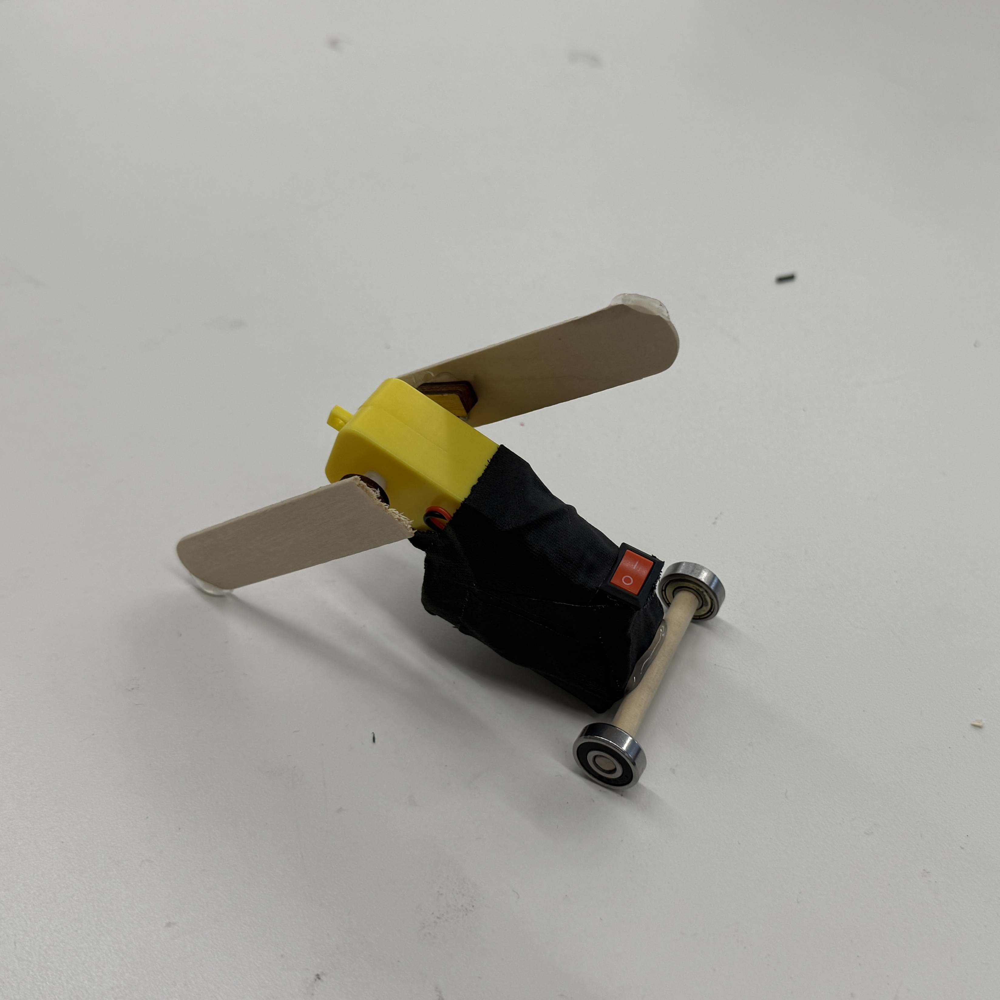
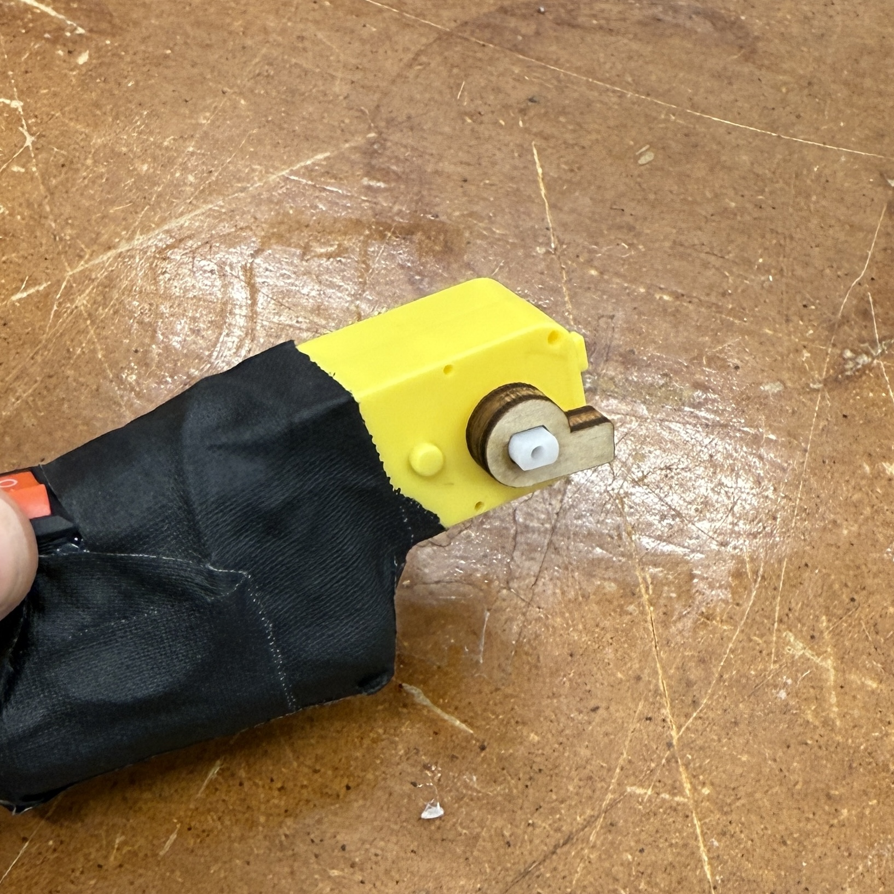
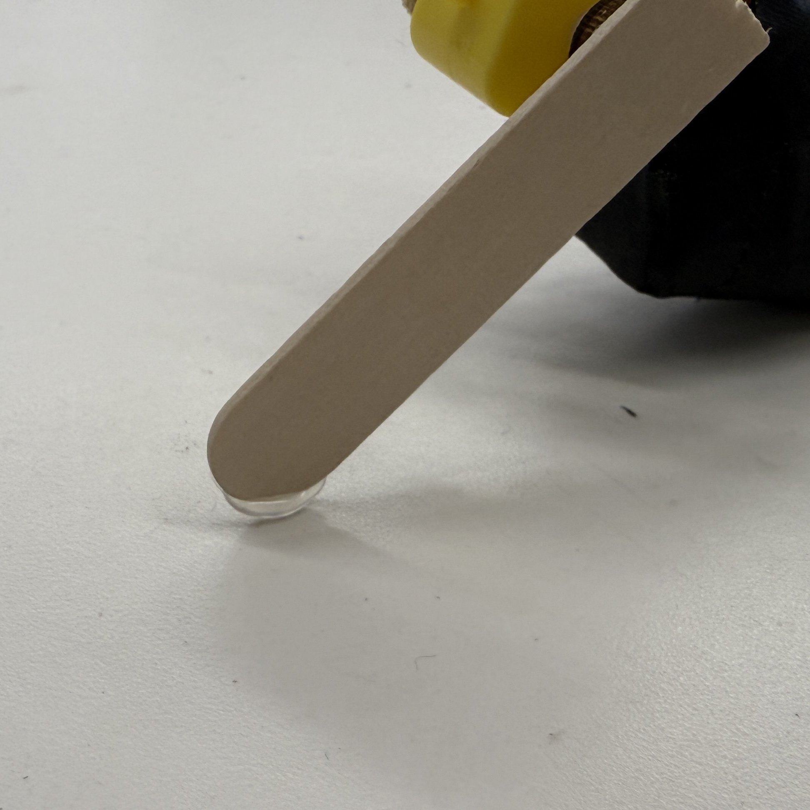
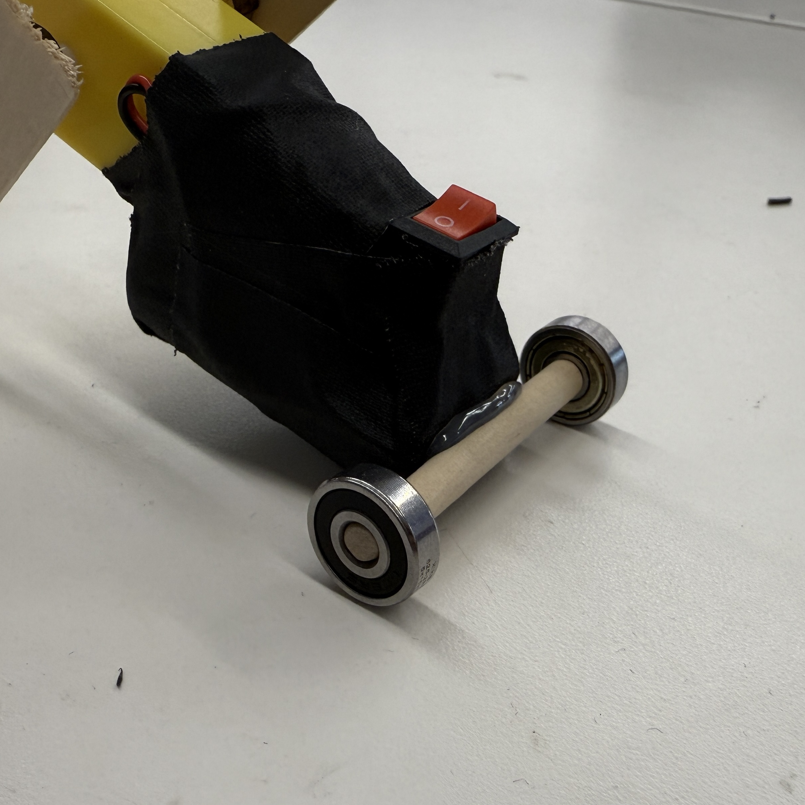

<div class="textcontainer">
<p class="margin"> </p>
<h3>Week 3: Hand Tools and Fabrication</h3>
<h4>Kinetic Sculpture</h4>

<br></br>
I built a crawling robot that has two opposite-timed arms that move it forward. The robot is powered by a three-volt system
that uses two AA batteries in series with a switch to turn it on and off. I designed two laser-cut friction
fitting adapters for the motor shafts (picture below). Initially I had trouble getting the robot to actually move forward instead
of flailing around. This called for two design changes: first I added hot glue pads on the legs to increase friction with the
ground, and second I added a dowel with two bearings to stabilize the back of the project and reduce forward-moving friction.
<br></br>



<br></br>
There's also a video here!
<br></br>
<video width="320" height="240" controls>
<source src="./vid.mp4" type="video/mp4">
</div>